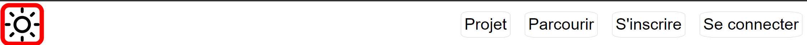
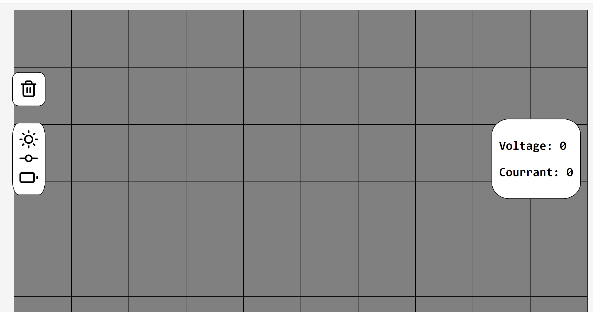

Bienvenue sur la page de notre projet: Circuit Éléctrique.
Içi vous retrouverez toutes les informations sur son fonctionnement.
Tout d'abord, la barre de navigation.

Appuyer sur le soleil vous redirigera vers cette page-ci.
Les autres boutons permettent de:
- Projet: Travailler sur un circuit éléctrique.
- Parcourir: Visualiser des projets déja crées.
- S'inscrire: Créer un compte sur le site.
- Se connecter: Se connecter à un compte déjà crée.
La page projet est composée d'une grille ainsi que de plusieurs bouttons qui permettent de travailler avec des composantes sur cette grille.

Sur la barre de gauche se trouvent des composantes.
Dans l'ordre:
Glisser une composante sur une case vide la placera à l'endroit choisi.
Glisser une composante depuis la barre de composantes sur une composante existante remplacera cette dernière.
Glisser une composante depuis la grille sur une composante existante créera une connexion entre les deux.
Au dessus de la barre des composantes se trouve une icone de poubelle.
Glisser une composante depuis la grille sur cette poubelle supprimera la composante ainsi que ses connexions.
Sur la droite se trouve un affichage de différents compteurs, un de voltage et un de courant, qui calculent ces valeurs depuis le circuit
Notes:
- Le boutton de connexion ne fait rien pour le moment. L'utilisateur est bel et bien authentifié, mais nous n'avons pas réussi à mettre en place
un système de sauvegarde de fichiers dans la base de données.
- Dû au problème mentionné ci-dessus, la page "parcourir" n'afficher que des images temporaires